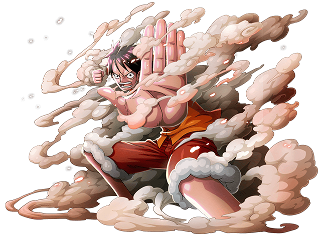
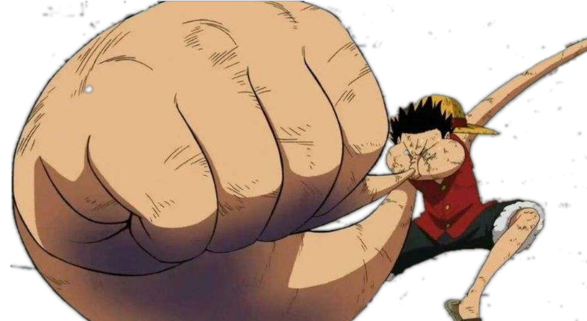
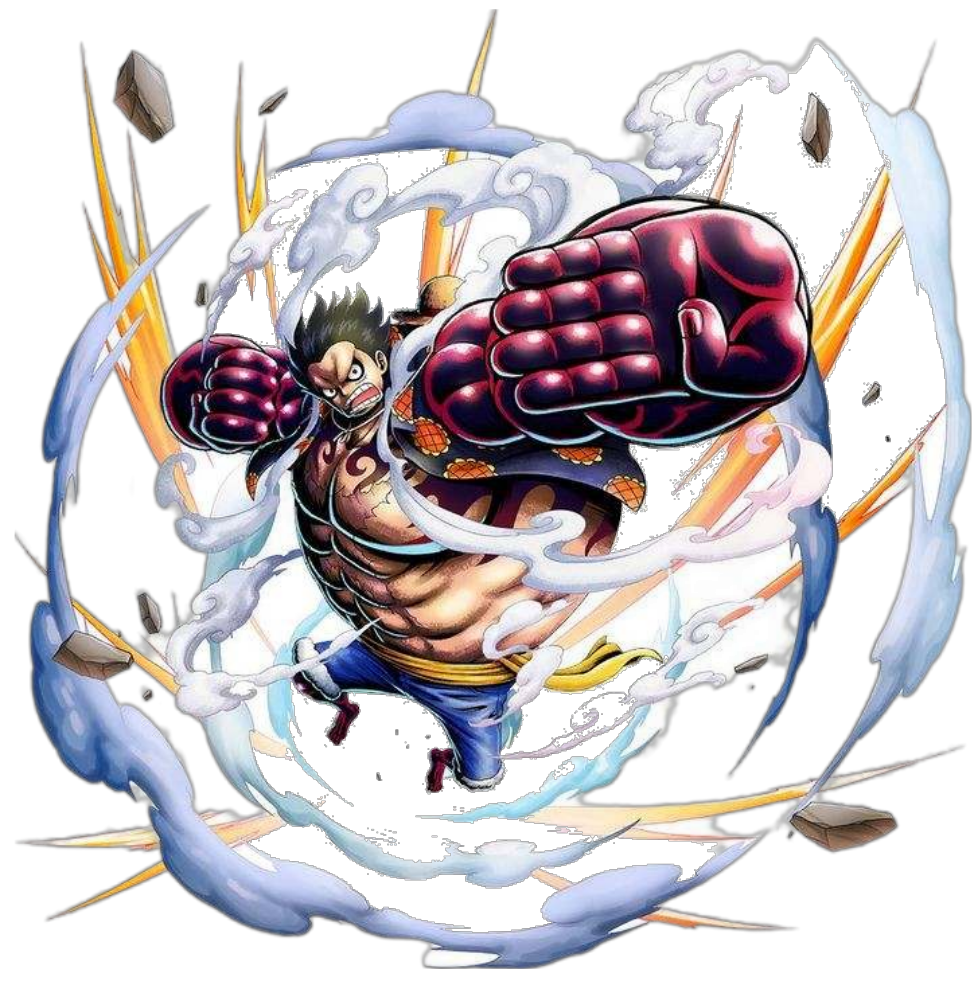
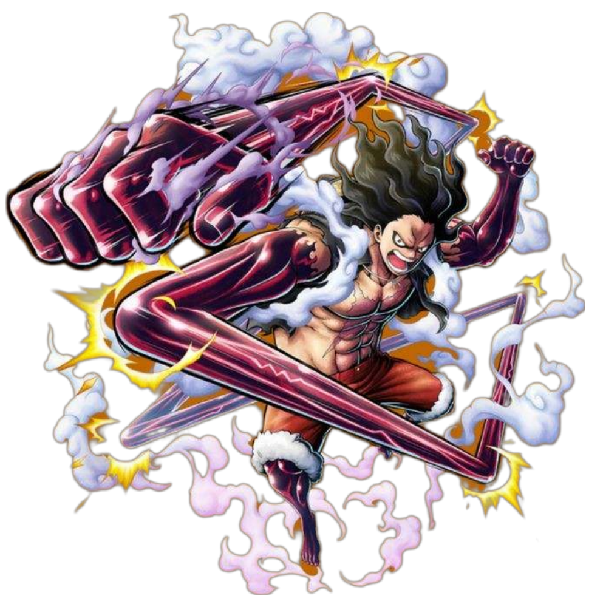
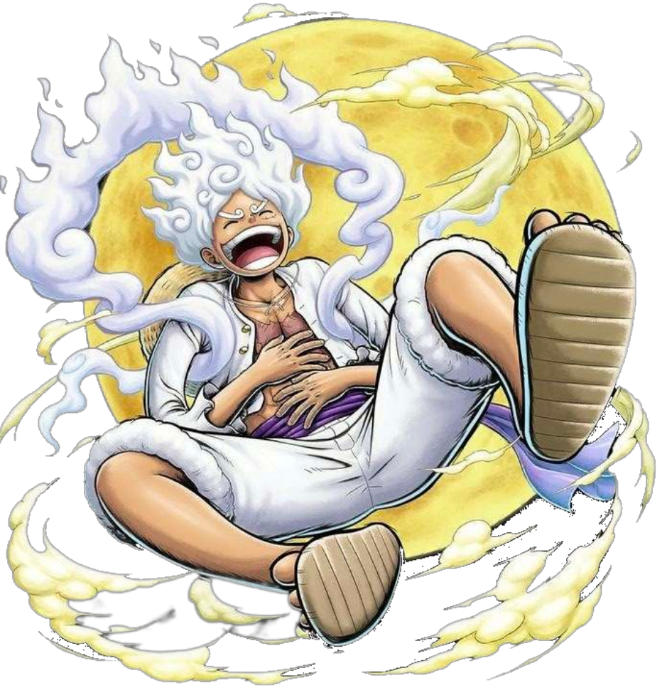

,also known as "Straw Hat Luffy"
and commonly as "Straw Hat", is the founder
and captain of the increasingly infamous
and powerful Straw Hat Pirates, as well as the
most powerful of its top fighters. He desires
to find the legendary treasure left behind by
the late Gol D. Roger and thereby become the
Pirate King, which would help facilitate an
unknown dream of his that he has told only to
Shanks, his brothers, and crew. He believes that
being the Pirate King means having the most freedom
in the world.

Gear 2
Gear 2 ("Gear Second") is a technique that
uses the power of the Gomu Gomu no Mi to
enhance the user's speed and mobility. It
was first seen in Luffy's fight against Blueno.
Gear3
Gear 3 ("Gear Third") is a
transformation technique
that uses the power of the
Gomu Gomu no Mi to inflate
a body part and enhance
the strength of the user.
It was first hinted at
during the climax of the
fight between Luffy and
Blueno, and first used
but not witnessed by anyone
(including the viewer),to
knock down a steel door in
Enies Lobby. It was first
fully seen in Luffy's fight
against Rob Lucci.

After the timeskip, as with
Gear 2, Luffy seems to have
obtained better skill at
utilizing Gear 3. Previously,
Gear 3 would increase the
size of the majority of
Luffy's arm, thus reducing
the speed of the attack in
exchange for a powerful impact.
However, Luffy after two years
can seemingly control where
the air is stored within his
limbs, where his fist becomes
large and instead of the air
being equally distributed
throughout his arm, an
equivalently large mass forms
behind the fist at his wrist.

Gear4
Gear 4 ("Gear Fourth") is a
transformation technique that
uses the power of the
Gomu Gomu no Mi and Busoshoku
Haki. It has multiple variations
that enhance some amount of the
user's defense, speed, and power
beyond their normal limits. It
was first seen in Luffy's battle
against Donquixote Doflamingo.
It was developed by Luffy during
his training on Rusukaina.
BoundMan
Luffy's first Gear 4 form is called
Boundman (Bounce-Man)
: Luffy's proportions become warped,
and his body becomes much larger
in size, with his arms, upper
torso, and legs coated in
Busoshoku Haki. As a side-effect,
he is incapable of standing
still on the ground, and instead
constantly bounds on the spot.
This form was created in order
to combat the many powerful and
large animals on Rusukaina.
arrow_forward_ios
arrow_back_ios

SnakeMan
"Snakeman" redirects here. For the gifter of the Beasts Pirates,
see Snakeman (Gifter).During his battle with Charlotte Katakuri,
Luffy revealed another form of Gear 4 known as Snakeman (Snake-Man).
Unlike his other two Gear 4 forms, Luffy does not significantly expand,
with his forearms, legs, and upper torso being only slightly enlarged
and the rest of his body retaining its normal proportions. The spread
of Haki is slightly more limited, as it does not appear to extend onto
Luffy's shoulders and upper body.

Gear 5
Gear 5 ("Gear Fifth") is the awakened form of the Gomu Gomu no Mi,
which strengthens the user's rubbery body. It also allows the user the
ability to manipulate and transform their environment, similar to a
Paramecia's awakening. Luffy achieved this ability during his final
battle with Kaidou on Onigashima.